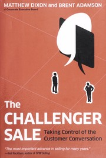
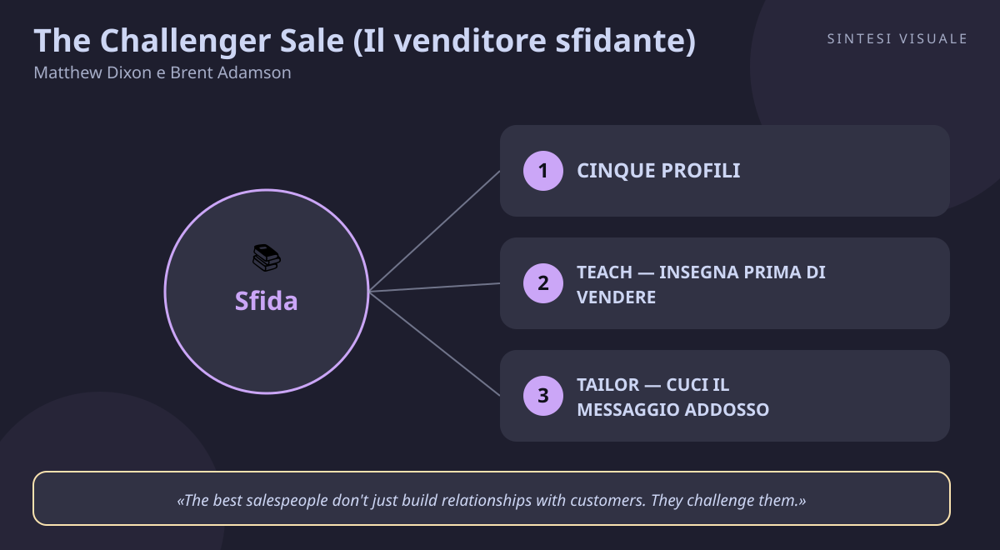

Home / Libri / The Challenger Sale (Il venditore sfidante)

The Challenger Sale (Il venditore sfidante)
Matthew Dixon e Brent Adamson · Vendite B2B
«The Challenger Sale (Il venditore sfidante)»
- Cinque profili
- Teach Tailor Control
- Tensione costruttiva
- Esperienza d'acquisto
📘Riassunto
La scintilla centrale. In un mercato dove i clienti arrivano al tavolo già informatissimi e paragonano tutto in rete, essere simpatici e disponibili non basta più: Dixon e Adamson, ricercatori del Corporate Executive Board, dimostrano con uno studio su migliaia di venditori che solo un profilo — lo Sfidante — vince con continuità nelle vendite complesse, perché insegna al cliente qualcosa che non sa sul suo stesso business invece di limitarsi a esaudire richieste.
La struttura logica. La prima parte presenta la ricerca e i cinque profili di venditore (Instancabile, Costruttore di relazioni, Lupo solitario, Risolutore reattivo, Sfidante), con un dato shock: quasi il 40% dei top performer è uno Sfidante, mentre il coccolato Costruttore di relazioni è il più raro tra i migliori. La seconda parte scompone il metodo nelle tre T: Teach, Tailor, Take Control — insegna una prospettiva nuova, cuci il messaggio su ogni interlocutore, guida la trattativa senza paura del confronto. La terza parte mostra come trasformare un'intera forza vendita: il marketing deve produrre insight commerciali, i capi devono allenare con coaching continuo, e l'azienda deve vendere "l'esperienza d'acquisto", non il prodotto.
Il punto di svolta. Il profilo che quasi tutti i capi assumono e premiano — quello gentile che non crea mai frizioni — è proprio quello che perde di più nelle trattative difficili: il cliente non premia chi lo compiace, premia chi gli cambia il modo di pensare. La tensione costruttiva, dosata bene, vende più della compiacenza.
L'eredità oggi. Il modello Challenger è diventato uno dei metodi di vendita B2B più adottati al mondo (oggi curato da Challenger Inc. e Gartner), con un seguito (The Challenger Customer) dedicato a convincere i gruppi d'acquisto, sempre più numerosi e diffusi in azienda.
💡Concetti chiave
- Cinque profili, un solo vincitore: ogni venditore rientra in un profilo, ma solo lo Sfidante domina le vendite complesse.
- Teach — insegna prima di vendere: porta al cliente una prospettiva che non ha, non l'ennesima scheda prodotto.
- Tailor — cuci il messaggio addosso: lo stesso insight va raccontato in modo diverso a ogni interlocutore.
- Take Control — guida tu la danza: non subire la trattativa, indirizzala con fermezza e cortesia.
- Tensione costruttiva: un po' di sano confronto vende più di mille rassicurazioni.
- L'esperienza d'acquisto e il coaching: si vince con come fai comprare, e lo Sfidante si può allenare.
📖1. Cinque profili, un solo vincitore
- Definizione dallo studio su circa 6.000 venditori emergono cinque profili — l'Instancabile (fatica e non molla mai), il Costruttore di relazioni (campione di simpatia che evita ogni scontro), il Lupo solitario (talento indisciplinato), il Risolutore reattivo (bravissimo dopo la vendita, passivo prima) e lo Sfidante: solo quest'ultimo primeggia con continuità nelle vendite complesse.
- Esempio due agenti della stessa azienda: uno invita i clienti a cena e non perde mai un compleanno, l'altro arriva con un'analisi che mostra al cliente dove sta perdendo soldi senza saperlo — a fine anno il secondo ha chiuso il doppio, pur essendo "meno simpatico".
- Come applicarlo individua il tuo profilo dominante con onestà (chiedi anche a un collega), poi lavora sul tratto Sfidante che ti manca di più: prospettiva nuova, messaggio su misura o guida della trattativa.
- Errore comune assumere e premiare solo "simpatia e disponibilità", cioè selezionare proprio il profilo più debole nelle trattative difficili.
- Collegamento dialoga con To Sell Is Human di Daniel Pink: anche Pink mostra che i migliori non sono gli estroversi trascinatori, ma chi porta prospettiva e sintonia.
📖2. Teach — insegna prima di vendere
- Definizione il commercial teaching è offrire insight commerciali: dati e prospettive che mostrano al cliente un problema che non sapeva di avere (o un costo che non stava calcolando) e lo conducono, passo passo, verso i punti di forza unici della tua offerta.
- Esempio invece di elencare le funzioni del tuo gestionale, mostri al titolare che i suoi resi gli costano ogni mese più dell'abbonamento annuale al tuo software: hai cambiato la sua testa prima di parlargli del prezzo.
- Come applicarlo prepara per ogni incontro un insight in quattro mosse — ferita (il problema nascosto), costo (quanto gli brucia), arma (la prospettiva nuova), vittoria (come si risolve con te) — e raccontalo prima di aprire cataloghi e listini.
- Errore comune "picchiare" il cliente con fatti e funzioni aziendali convinti che più informazioni significhino più valore: è rumore, non insegnamento.
- Collegamento richiama Made to Stick di Chip e Dan Heath: un insight semplice, concreto e inatteso resta in testa molto più di una brochure.
📖3. Tailor — cuci il messaggio addosso
- Definizione adattare lo stesso insight alle lenti di chi hai davanti: il direttore finanziario ragiona di costi e rischi, il responsabile operativo di tempi e organico, il commerciale di ricavi e velocità — lo stesso messaggio per tutti è un messaggio per nessuno.
- Esempio lo stesso software gestionale al titolare lo racconti come "meno soldi buttati nei resi", al magazziniere come "niente più straordinari per ricontare le giacenze", al commerciale come "preventivi in dieci minuti invece di due giorni".
- Come applicarlo prima di ogni trattativa mappa gli interlocutori (ruolo, obiettivi, paure) e riscrivi il tuo insight in una frase per ciascuno; in riunione dai a ognuno il suo pezzo.
- Errore comune presentare la stessa slide uguale per tutti, convinti che "i fatti parlino da soli": i fatti parlano solo la lingua di chi li ascolta.
- Collegamento si sposa con la sintonizzazione di Pink (To Sell Is Human) e con l'ascolto attivo di Dale Carnegie: prima capisci le lenti dell'altro, poi ci guardi dentro insieme.
📖4. Take Control — guida tu la danza
- Definizione prendere il controllo significa guidare il processo d'acquisto con raccomandazioni chiare, scadenze condivise e verifiche di avanzamento — senza inseguire, senza svendersi e senza aver paura di dire "su questo non sono d'accordo".
- Esempio il cliente chiede "ci pensi su e mi faccia lo sconto del 15%": invece di sparire per due settimane e tornare col prezzo tagliato, rispondi "capisco, ma prima chiariamo cosa succede se restate fermi altri sei mesi" — e fissi il passo successivo con data e responsabili.
- Come applicarlo chiudi ogni incontro concordando il prossimo passo concreto (chi fa cosa entro quando); quando il cliente frena, fai domande calibrate invece di concedere sconti; sii disposto a squalificare chi non è davvero adatto.
- Errore comune scambiare la gentilezza per accondiscendenza: dire sempre sì per paura di perdere il cliente è il modo più veloce per perdere la trattativa (e il margine).
- Collegamento richiama Never Split the Difference di Chris Voss: anche il negoziatore dell'FBI guida con domande calibrate e non ha paura del no.
📖5. Tensione costruttiva
- Definizione è il confronto aperto e rispettoso con cui lo Sfidante mette in discussione le certezze del cliente: un dibattito garbato che crea quel pizzico di disagio necessario per far muovere chi è adagiato sullo status quo — senza frizione non c'è cambiamento.
- Esempio "So che da dieci anni fate così, e i numeri dicono che funziona. Ma se vi mostrassi che proprio quel metodo vi costa tre clienti l'anno, sareste curiosi di vedere come?" — non attacchi, inviti a guardare.
- Come applicarlo dosa la tensione in tre mosse: riconosci ciò che il cliente fa bene, mostra con dati il costo nascosto di non cambiare, poi apri la porta alla soluzione; se la temperatura sale troppo, abbassala con una domanda sincera.
- Errore comune due estremi opposti — evitare ogni disaccordo per "non rovinare il rapporto", oppure sfidare con arroganza e trasformare il confronto in scontro.
- Collegamento si lega alla Pre-Suasion di Cialdini: orientare l'attenzione sul problema prima di proporre la soluzione rende la soluzione stessa più desiderabile.
📖6. L'esperienza d'acquisto e il coaching
- Definizione nelle vendite complesse i clienti restano fedeli più per come li hai fatti comprare che per cosa hai venduto: la lealtà nasce dall'esperienza d'acquisto. E la buona notizia dello studio è che lo Sfidante non si nasce, si diventa: i suoi comportamenti sono insegnabili con coaching continuo, su misura e orientato ai comportamenti sul campo.
- Esempio un'azienda smette di formare gli agenti solo sul prodotto e li allena a raccontare insight, a gestire le obiezioni e a guidare i passi successivi: in un anno i "medi" iniziano a chiudere come gli ex top performer.
- Come applicarlo se guidi un team, sposta la formazione dal prodotto agli insight e fai coaching individuale regolare; se sei da solo, registrati (o fatti osservare) nelle trattative e rivedi dove hai insegnato, adattato e guidato — e dove invece hai solo assecondato.
- Errore comune credere che lo Sfidante sia "un carattere" e smettere di allenarsi, oppure fare un corso una tantum e aspettarsi miracoli senza coaching sul campo.
- Collegamento richiama il mindset di crescita di Carol Dweck e Grit di Angela Duckworth: eccellenza come pratica deliberata, non come dote innata.
💬Citazioni da ricordare
"The best salespeople don't just build relationships with customers. They challenge them."
Perché conta: è la tesi del libro in una riga — la sfida rispettosa batte la compiacenza.
"What's the secret to sales success? If you're like most business leaders, you'd say it's fundamentally about relationships — and you'd be wrong."
Perché conta: è l'apertura shock del libro, e costringe a rimettere in discussione tutto ciò che si credeva sulle vendite.
"Challengers aren't so much world-class investigators as they are world-class teachers. They win not by understanding their customers' world as well as the customers know it themselves, but by actually knowing their customers' world better than their customers know it themselves."
Perché conta: definisce il cuore del metodo — vincere insegnando, non interrogando.
🌍Esempi di oggi
- Il preventivo del freelance. Invece di mandare un listino con tre pacchetti, apri mostrando al cliente quanto gli costa ogni mese il problema che ignora (clienti persi per il sito lento): hai insegnato prima di vendere, e il prezzo diventa un confronto tra costo e risparmio.
- La riunione in cui tutti annuiscono. Il fornitore propone di rinnovare il contratto "come l'anno scorso" e tutti sembrano d'accordo: chi chiede "e se vi mostrassi che proprio quel rinnovo automatico vi fa pagare il 20% in più dei nuovi clienti?" sta usando tensione costruttiva — e spesso salva il budget dell'azienda.
- Mamma, papà e lo smartphone. Vietare o comprare senza discutere sono accondiscendenza o imposizione; mostrare a tuo figlio quanto tempo ruba davvero lo schermo (dati alla mano) e concordare insieme regole e verifiche è Teach, Tailor e Take Control applicati in famiglia.
🛠️Azioni pratiche
- Prepara un insight in quattro mosse (problema nascosto, costo, prospettiva nuova, soluzione) per il tuo prossimo incontro di lavoro o la tua prossima proposta, e raccontalo prima di parlare di prezzi e dettagli.
- Nella prossima trattativa o discussione difficile, mappa gli interlocutori e formula per ciascuno una frase su misura che colleghi la tua proposta a ciò che lui misura ogni giorno.
- Chiudi il prossimo incontro fissando per iscritto il passo successivo (chi fa cosa entro quando) invece di salutarvi con un generico "ci sentiamo": è il primo esercizio da Sfidante.
💎Da portare a casa
Non vince chi compiace il cliente, vince chi gli insegna qualcosa: sfida con rispetto, cuci su misura e guida — il resto segue.
Rispondi in chat con il numero di un concetto (1-6) per approfondirlo, oppure fai una domanda su un tema: vendite, persuasione, negoziazione, public speaking, stress, emozioni, carriera.
📄
# The Challenger Sale (Il venditore sfidante) — Matthew Dixon e Brent Adamson
Titolo: The Challenger Sale: Taking Control of the Customer Conversation · Autori: Matthew Dixon e Brent Adamson · Anno: 2011 (Portfolio/Penguin, 240 pagine; ed. italiana Il venditore sfidante. Il modello Challenger)
Questo libro conta oggi perché demolisce il mito più radicato delle vendite — che basti costruire buone relazioni per vincere — e lo sostituisce con un metodo provato sui numeri: i migliori non assecondano il cliente, lo sfidano con idee nuove. È utile a chiunque venda soluzioni complesse (commerciali B2B, consulenti, freelance, agenti), ma anche a manager, marketer e a chiunque debba convincere persone che "sanno già tutto".
🖼️In un colpo d’occhio

Tocca l’immagine per ingrandirla.